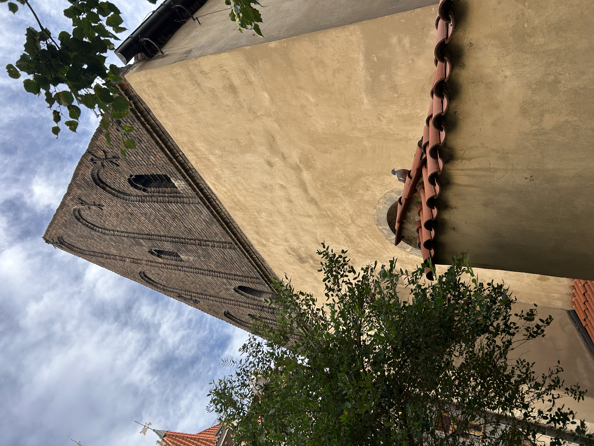
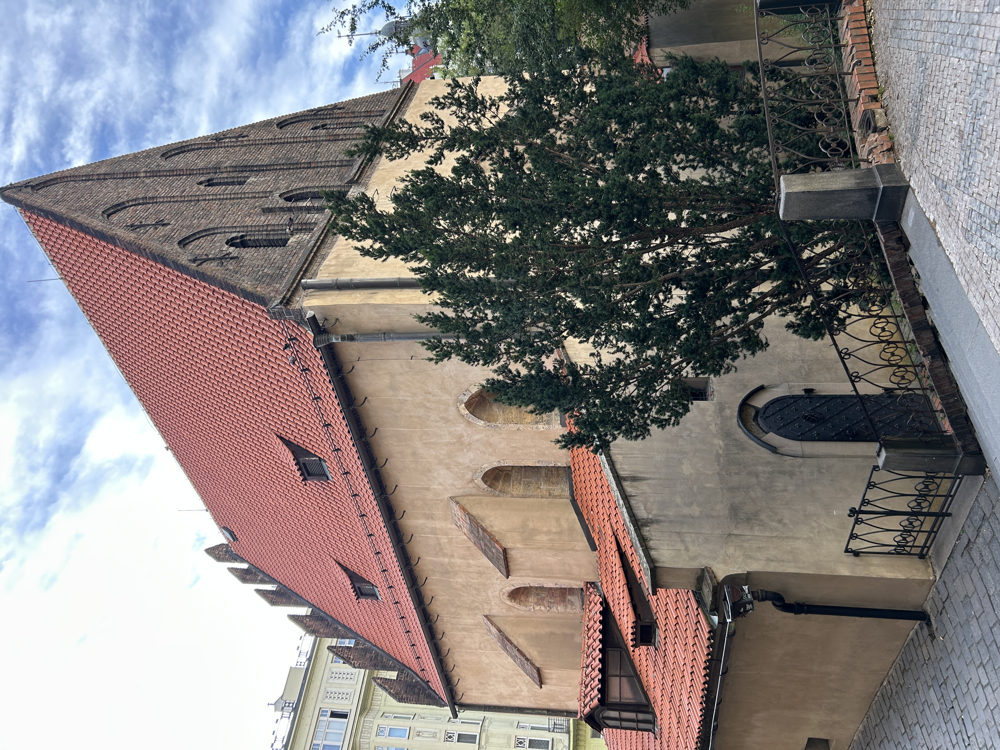

The Staronova Synagogue, also referred to as the Old-New Synagogue, is the oldest active synagogue in Europe.
To the best of our scholarly knowledge, Jewish communities first appeared in Prague as early as the 10th century, and eventually became concentrated within a walled Ghetto, referred to now as the Jewish Quarter, which was historically granted a high degree of self-governance. Famous writer Franz Kafka was born in this Jewish community.
The Synagogue itself was completed in 1270 AD and today hosts Orthodox Jews which use it for regular worship. It was originally referred to as the New Synagogue, but, as many newer synagogues began to appear, the building took on the name "Old-New Synagogue."
According to local legend, angels brought stones from the Jerusalem Temple to build the structure, on the condition that they be returned when the Messiah comes and they are needed for the Third Temple. Other legends state that the body of a Golem, created by Jewish mystic and Rabbi Judah Loew ben Bezalel, lies in the attic of the building.
